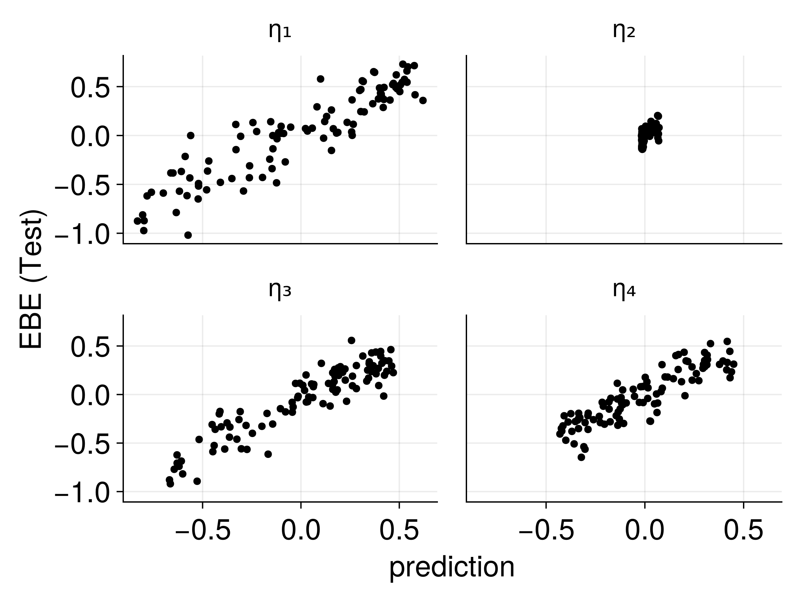

# Load a pre-trained text embedding model from HuggingFace
loaded_model = hgf"avsolatorio/NoInstruct-small-Embedding-v0"
const encoder = loaded_model[1]
const llm = loaded_model[2];
# Define how to get a patient's embedding
get_embedding(subj::DeepPumas.Pumas.Subject) = get_embedding(subj.covariates(0).Description)
function get_embedding(context)
enc = encode(encoder, context)
out = llm(enc)
return out.pooled
end
# Get the embeddings for all patients and put it in a matrix
X_train = mapreduce(get_embedding, hcat, train_pop)
X_test = mapreduce(get_embedding, hcat, test_pop)DeepNLME with Complex Covariates
Embeddings, Text Data, and Advanced Applications
Niklas Korsbo
2025-10-09
Complex Covariates in NLME
The Data Challenge

Challenge: How do we use rich text descriptions as covariates in NLME models?
Traditional NLME with Simple Covariates
Good predictions, but missing information from complex covariates
Patient Embeddings
EBEs as Patient Embeddings
Data
Embedding
| patient | η₁ | η₂ | η₃ | η₄ |
|---|---|---|---|---|
| Patient 1 | 0.42 | 0.1 | -0.26 | 0.28 |
| Patient 2 | 0.66 | 0.08 | -0.92 | 0.23 |
| Patient 3 | -0.43 | -0.03 | 0.23 | -0.28 |
Generated
Key insight: EBEs encode patient-specific information as low-dimensional vectors!
Validation: Known Relationships
EBEs capture the underlying patient characteristics!
Text Embeddings
The Ease of Creating Embeddings
Embedding Subspacing
- Consider the embedding space as a “meaning space”
- The original model had Shakespeare and Twitter in its training
- Our data are all about describing wellness
- Our data should be on a low-dimensional manifold of the embedding space
Solution: Use PCA for dimension reduction
Embedding Space Structure
Text embeddings capture meaningful clinical information!
Connecting Embeddings to EBEs
Strong correlations between text embeddings and patient-specific parameters!
Predicting Patient Parameters
Neural Network Architecture

Text → Embeddings → Neural Network → Patient Parameters
Augmented NLME Models
Usage with NLME
Multiple approaches available:
- Use embeddings as NLME covariates
- Straightforward integration
- Limited by traditional covariate modeling
- Jointly model NLME and embeddings
- More sophisticated approach
- Accounts for uncertainty in embeddings
- Augment existing models
- Add predicted EBEs to trained models
- Preserve existing model structure
Embedding-Augmented Predictions
Performance on test data
| source | MAE | r2 |
|---|---|---|
| Original | 0.361 | 0.712 |
| Augmented | 0.27 | 0.82 |
| DataModel | 0.229 | 0.865 |
Significant improvement using text embeddings!
Improved Population Modeling
Before (traditional NLME)
After (embedding-augmented)
Better population-level predictions and reduced unexplained variability!
Generalization to Other Data Types
Embeddings from Any Data
- Text (clinical notes, patient descriptions)
- 2D Images (X-rays, histology, photos)
- 3D Images (CT scans, MRI - limited model availability)
- Omics data (genomics, proteomics - specialized models)
- Time series (ECG, continuous monitoring)
- Mixed modalities (combining multiple data types)
Simple Conceptual Pipeline
- Model longitudinal data with traditional NLME
- Convert complex covariates to embeddings using pre-trained models
- Find relevant subspace using dimensionality reduction (PCA)
- Regress embeddings to EBEs using neural networks
- Predict patient parameters for new subjects: \(η_{pred}\)
- Augment NLME model: \(η \rightarrow η + η_{pred}\)
- Refit residual distribution to reflect reduced unexplained variability
- Apply standard NLME methods (VPC, simulations, etc.)
Close to trivial to implement!
Generalized Framework
Training Phase: \[ \max_θ \log p(y | θ) = \sum_i^N \log \int p(y_i | θ, η_i) \cdot p(η_i | θ) dη_i \]
Embedding Phase:
\[
z_i^* = \text{Embed}(x_i) \quad \text{where } x_i \text{ is complex covariate data}
\]
Joint Modeling: \[ \max_{θ,w} \log p(y | θ, z^*) = \sum_i^N \log \int p(y_i | θ, η_i, z_i^*) \cdot p(η_i | θ) dη_i \]
Key Advantages
- Leverages existing models: Use pre-trained embeddings (GPT, BERT, vision models)
- Data efficient: Much less data needed than training from scratch
- Scientifically grounded: Preserves mechanistic understanding in NLME
- Flexible: Works with any type of complex covariate
- Interpretable: Can understand which parts are mechanism vs data-driven
- Scalable: Can handle large-scale clinical datasets
Next Steps
Coming up: Hands-on implementation
- Work with synthetic text data
- Build embedding pipelines
- Augment NLME models
- See the power of complex covariates in action